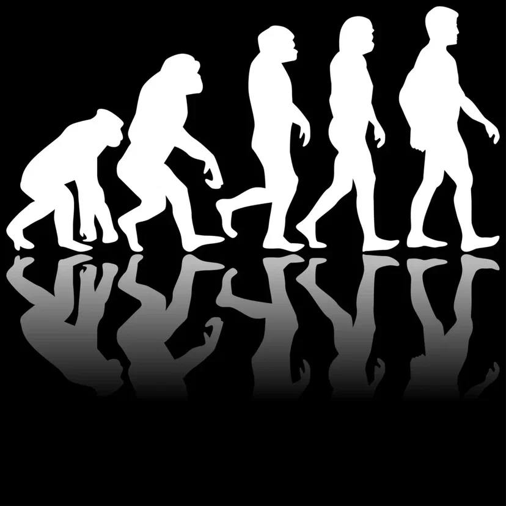

Я вообще делаю, что хочу
Хочу импланты – звоню врачу
Кто меня не любит? Я вас не слышу
Вы просто мне завидуете, я молчу
Я не молчу, когда я хочу
Я не продаюсь, но за деньги – да
Мой продюсер говорит: "Ты – поп-звезда"
И, кстати, мой продюсер – это мой муж, да
Я не скажу в ответ ничего на хейт
Я не скажу - привет, если бабок нет
Слышу любимый звук, это звон монет
Они тянут сотни рук, это мой концерт
Не завожу подруг, но за деньги - да
Я не делаю фиты, даже за деньги - да
Я подумаю потом, но скажу сразу - да
За деньги - да, за деньги - да
За деньги - да, день-день-день-деньги - да, да...
За деньги - да, день-день-день-деньги - да, да...
За деньги - да, день-день-день-деньги - да, да...
За деньги - да, день-день-день-деньги - да, да...
Человек- это биосоциальное существо, для которого характерны наследственные черты, обусловленные природой и черты, появившиеся в процессе социализации
Черты, характерные для человека:
1. способность постановки цели
2. способность к членораздельной речи
3. способность мышления и др.
4. способность к моделированию поведения
5. нормы морали и духовные ценности
6. наличие социальных и духовных потребностей
7. способность к осознанной деятельности
Черты человека, как животного:
1. физиологические потребности
2. инстинкты и рефлексы
3. потребность в продолжении рода и др.
План
1 понятие человека как биосоциального существа
2 биологические черты человека
2.1 инстинкты
2.2 потребность в продолжении рода
2.3 особенности внешности и др.
3 социальное в человеке
3.1 нормы морали
3.2 способность постановки цели
3.3 способность членораздельной речи
4 понятие социализации и ее влияние на развитие человека
Познание – это процесс получения человеком знаний о мире, обществе и самом себе. Результатом познания является знание.
Уровни познания: чувственное (познание при помощи органов чувств) и рациональное (при помощи разума, без воздействия органов чувств).
Ступени чувственного познания:
1) ощущение (познание путем прямого воздействия объекта познания на органы чувств человека)
2) восприятие (создание целостного образа)
3) представление (создание образов предметов в памяти человека)
Методы чувственного познания:
сравнение
эксперимент
наблюдение измерение (интуицию можно отнести к методам чувственного познания)
Ступени рационального познания:
1 понятие (мысль, выраженная словами, раскрывающая общие черты предмета)
2 суждение (мысль, содержащая либо подтверждение либо отрицание, выраженной в понятии мысли)
3 умозаключение (мысль, содержащая новое суждение, основанное на обобщении фактов)
Методы рационального познания:
логический метод
синтез
дедукция
индукция
План
1) понятие познания
2) уровни познания
2.1) чувственное
2.2) рациональное
3) ступени чувственного познания
3.1) ощущение
3.2) восприятие
3.3) представление
4) ступени рационального познания
4.1) понятие
4.2) суждение
4.3) умозаключение
5) методы чувственного познания
5.1) эксперимент
5.2) измерение
5.3) наблюдение и др.
6) методы рационального познания
6.1) логический метод
6.2) дедукция
6.3) индукция
7) роль чувственного и рационального познания в жизни общества
Признаки научного познания:
объективность
проверяемость применимость на практике
терминология
универсальность знаний
Принципы научного познания:
*принцип причинности (возможность установления причино-следственных связей)
*принцип истинности (соответствие познаваемому предмету)
*принцип относительности (любое научное знание относительно, так как его можно дополнить с развитием науки)
Формы научного познания:
научный факт
эмпирический закон
проблема
гипотеза
теория
концепция
Уровни научного познания:
эмпирический (выявление фактов, основанных на чувственном познании)
теоретический (формирование фундаментальных знаний познавание сущности процессов и явлений и т.д.)
Методы эмпирического уровня научного познания:
эксперимент
наблюдение
измерение
классификация
систематизация
описание
сравнение
Методы теоретического уровня научного познания:
дедукция
индукция
абстрагирование
моделирование
аналогия
анализ
синтез
идеализация
формализация
1) понятие научного познания
2) признаки научного познания
2.1) проверяемость
2.2) объективность
2.3) терминология и др.
3) принципы научного познания
3.1) принцип истинности
3.2) принцип относительности
3.3) принцип причинности
4) формы научного познания
4.1) научный факт
4.2) концепция
4.3) гипотеза и др.
5) уровни научного познания
5.1) теоретический
5.2) эмпирический
6) методы теоретического уровня научного познания
6.1) аналогия
6.2) идеализация
6.3) формализация и др.
7) методы эмпирического уровня научного познания
7.1) эксперимент
7.2) наблюдение
7.3) измерение и др.